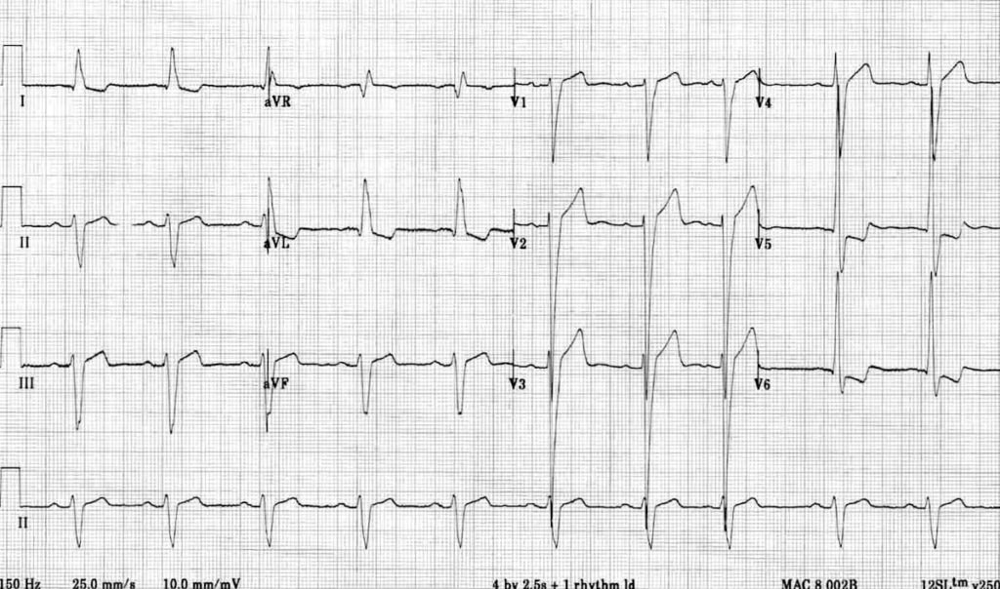
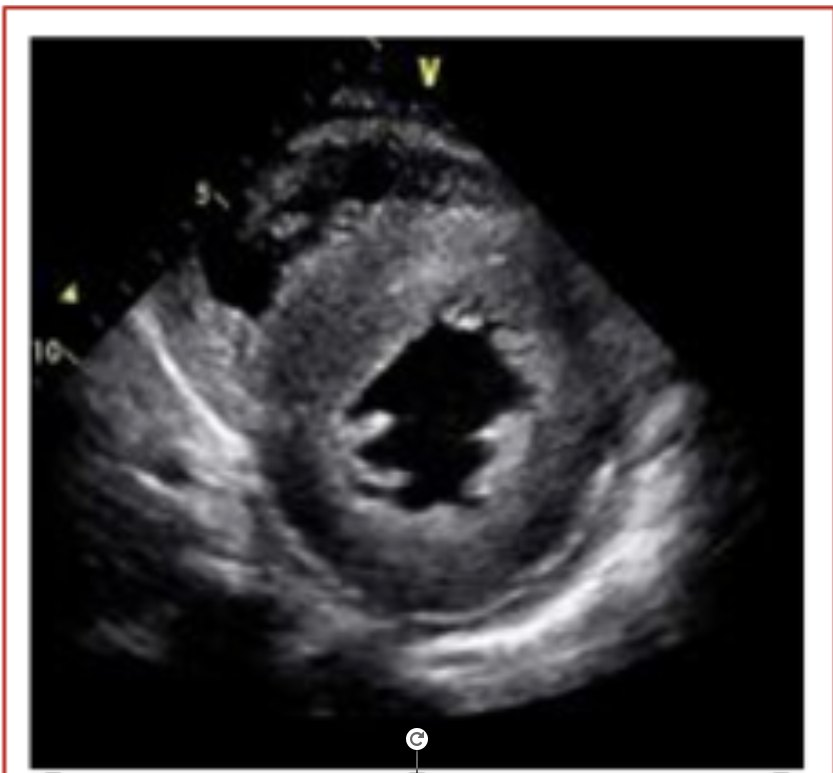
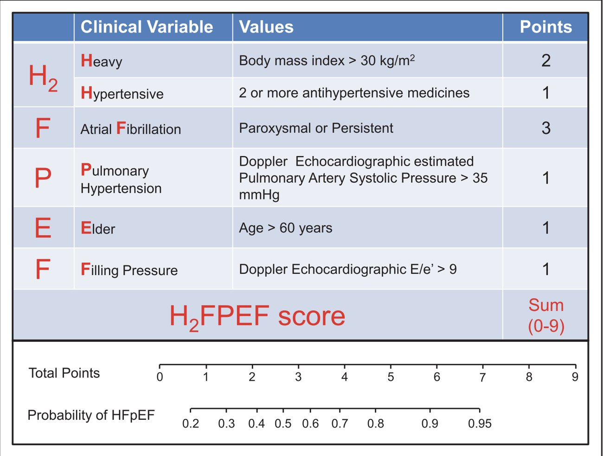

ECG (LVH, an LBBB debate) · concentric LVH on echo · diastolic dysfunction grades · H₂FPEF · the diagnosis
ECG, Echo & the H₂FPEF Score
Additional studies: CXR (PA and lateral), 12-lead ECG (ischemia, LVH) and TTE (chamber size and function).
Her ECG
- Rate 60, sinus. Axis upright in I, down in aVF → left axis deviation (about −60°). PR borderline → first-degree AV block.
- LVH voltage: Dr. Segal's "11 and 35": R in aVL > 11 mm (hers ~13–14), or S in V1/V2 + R in V5/V6 ≥ 35 mm (19 + 23 = 42). Only valid in adults; Dr. Qazi says the criteria were validated at age ≥ 40, and young people often have high voltage.
- LV strain pattern in I, aVL, V5–V6; no ischemic changes. No R-wave progression: the precordial leads stay negative with no transition.
- Dr. Qazi's read: the QRS is > 120 ms and the tracing meets most criteria for LBBB; what's missing is the notched R wave in I, aVL and V6.
- Rhythm tip: look for P waves in lead II (upright) and V1 (often biphasic: right then left atrial). A negative P in aVR confirms correct limb-lead placement.

Her echo


EF 65% (preserved), concentric LVH, grade II diastolic dysfunction (pseudonormal), LA enlargement, PASP 40 mm Hg, normal valves. CXR normal.
Dr. Qazi: every report comments on systolic and diastolic function, as normal relaxation or grade 1, 2 or 3 diastolic dysfunction. Grade 1 → LA pressure is usually normal, and in patients in their 70s–80s it is a normal pattern for age. Grade 2 → LA pressure is elevated. Diastolic dysfunction is "very common… most of the middle-aged population." She also revisited yesterday's valve lecture: AS → concentric LVH; AR → eccentric LVH (cavity dilation).
Is there a score? H₂FPEF
| Variable | Criterion | Points | |
|---|---|---|---|
| H₂ | Heavy | BMI > 30 | 2 |
| Hypertensive | ≥ 2 antihypertensives | 1 | |
| F | Atrial fibrillation | Paroxysmal or persistent | 3 |
| P | Pulmonary hypertension | PASP > 35 mm Hg | 1 |
| E | Elder | Age > 60 | 1 |
| F | Filling pressure | E/e′ > 9 | 1 |

🧮 H₂FPEF calculator
Tick what applies. The probability is read off the published nomogram (approximate).
Her slide total is 2 + 1 + 0 + 1 + 1 + ? = 5 (the filling pressure wasn't reported). Dr. Segal: by the score alone she has > 80% probability of HFpEF.
The diagnosis
Pathophysiology: impaired relaxation (a filling problem) in a concentrically hypertrophied ventricle. Etiologies: ischemic (always exclude), valvular, hypertensive (HFpEF early, HFrEF late; the most common route, especially with diabetes, metabolic dysfunction and aging), primary cardiomyopathy, storage diseases (amyloid), acquired (tachycardia, medications), congenital heart disease.
Q: A 67-year-old woman with obesity (BMI 34), HTN on three drugs, paroxysmal AF, PASP 40 and E/e′ 12 has dyspnea and an EF of 60%. What is her H₂FPEF score?
2 + 1 + 3 + 1 + 1 + 1 = 9: HFpEF is near-certain.
Q: An echo report says "grade 1 diastolic dysfunction" in an 82-year-old. Is the LA pressure likely elevated?
No. In grade 1, LA pressure is usually normal, and the pattern is normal for that age. Grade 2 (pseudonormal) implies elevated LA pressure.